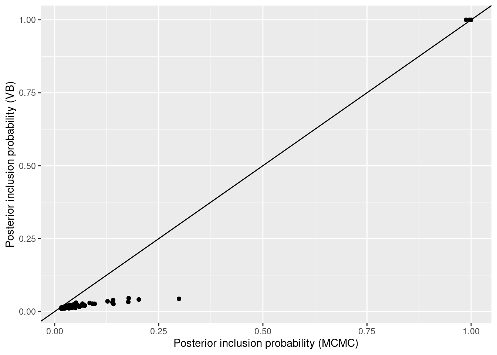
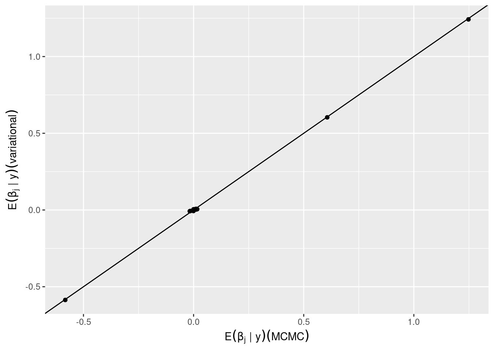

2 Bayesian model selection and averaging
This chapter provides an introduction to the foundations of Bayesian model selection and averaging, providing simple illustrations throughout and practical thoughts. We use the term Bayesian model selection (BMS) for the prototypical setting where one considers multiple hypotheses or models and wishes to obtain posterior model probabilities for each model. For example, in regression each model may be associated to what covariates are included in the regression equation (i.e. have non-zero coefficients), in graphical models each model may be associated to what edges are present, and in mixtures each model may correspond to a number of mixture components (clusters).
Section 2.1 illustrates the basic BMS notions by testing whether a Gaussian mean is zero. Section 2.2 discusses the general BMS framework, Section 2.3 discusses BMA for parameter estimation (point estimates, posterior intervals). Sections 2.1-2.3 are intended for readers who are unfamiliar with BMS and BMA. Section 2.4 discusses practical issues to consider if one uses BMA for forecasting. These issues are important and, despite basic, are not sufficiently well-known in our experience. Sections 2.5 and 2.6 discuss slightly more nuanced details on how to set prior distributions, some reasonable defaults and how to induce sparsity in high dimensional problems using either sparse model priors or non-local parameter priors. Finally, Section 2.7 outlines some key ideas behind computational aspects of BMS. Before proceeding, we load R packages needed by our examples.
2.1 A simplest example
Example 2.1 Let \(y_i \sim N(\mu, \sigma^2)\) independently for \(i=1,\ldots,n\) and consider the two models (or hypotheses) \[\begin{align*} &\mu = 0 \\ &\mu \neq 0. \end{align*}\] As explained in Section 2.2, in this book we denote models by \(\gamma\). In this case we use \(\gamma=0\) to denote the null model \(\mu=0\) and \(\gamma=1\) to denote the alternative model \(\mu \neq 0\).
The goal is to obtain the posterior probability of the alternative \(P(\mu \neq 0 \mid \mathbf{y})\), or equivalently \(P(\gamma=1 \mid \mathbf{y})\), where \(\mathbf{y}= (y_1,\ldots,y_n)\) are the observed data. We may also want to obtain a BMA estimate \(E(\mu \mid \mathbf{y})=\) \[E(\mu \mid \gamma=0, \mathbf{y}) P(\gamma=0 \mid \mathbf{y}) + E(\mu \mid \gamma=1, \mathbf{y}) P(\gamma=1 \mid \mathbf{y})= E(\mu \mid \gamma=1, \mathbf{y}) P(\gamma=1 \mid \mathbf{y}),\] since \(E(\mu \mid \gamma=0, \mathbf{y})=0\), and a 0.95 posterior interval for \(\mu\), that is an interval \([u_1,u_2]\) such that \(P(\mu \in [u_1,u_2] \mid \mathbf{y})= 0.95\).
To perform a Bayesian analysis, one must specify a prior distribution on everything that is unknown. In our context:
We don’t know which model is the correct one. We hence need to specify prior model probabilities, e.g. \(P(\gamma=0)\) and \(P(\gamma=1)\) in this example.
Even if we knew the model, we don’t know the value of its parameters. We hence need to specify a prior on the parameters of each model. In this example, we must set prior densities \(p(\sigma^2 \mid \gamma=0)\) and \(p(\mu, \sigma^2 \mid \gamma=1)\).
In simple settings with two models it is customary to set a uniform model prior. That is, equal prior model probabilities \(P(\gamma=0)= P(\gamma=1)= 1/2\), unless one has strong reasons for doing otherwise (e.g. data from a related past experiment). In Section 2.5 we discuss how to set the model prior in more advanced settings.
For the prior on parameters, both models feature the error variance. A popular choice is setting an inverse gamma prior \(\sigma^2 \sim IG(a/2,l/2)\) under both models, for some given \(a,l>0\). Typically posterior probabilities are robust to the choice of \((a,l)\), provided they’re small values (by default, modelSelection sets \(a=l=0.01\)).
To complete the parameter prior under the alternative model we must set a prior on \(\mu\) given \(\sigma^2\). A popular choice is \(p(\mu \mid \sigma^2, \gamma=1)= N(\mu; 0, g \sigma^2)\), for some given \(g>0\). Posterior probabilities are sensitive to \(g\), but a common default (unit information prior) is \(g=1\) and results are typically fairly robust as long as \(g\) is not too different from this default.
In Section 2.6.3 we extend the example to consider a wide range of \(g\) values.
See also Section 2.6 for some discussion on parameter priors in more advanced examples.
Let us work out Example 2.1 in R. We simulate a dataset where \(\mu=0\), set a uniform model prior and a Gaussian prior on \(\mu\) with normalidprior setting the default \(g=1\) (corresponding to argument taustd).
Importantly, we set the argument center=FALSE because otherwise modelSelection centers \(\mathbf{y}\) by subtracting its sample mean and, while this is conventional in regression where there is little interest in the intercept, in this example it would be inappropriate (the centered \(\mathbf{y}\) has mean 0 by definition!).
We obtain a high posterior probability \(P(\gamma = 0 \mid \mathbf{y})\), hence there isn’t Bayesian evidence that \(\mu \neq 0\).
We remark that for a sample size of \(n=100\) and a single parameter being tested (\(\mu\)), one might expect to get more conclusive evidence in favor of the null. This issue can be addressed by setting a non-local prior on \(\mu\), please see Section 2.6.
We use coef to obtain the BMA estimates and 0.95 intervals for \(\mu\) (row Intercept in the output below) and \(\sigma^2\) (row phi).
For comparison, a t-test also doesn’t lead to rejecting the null model.
priorModel <- modelunifprior()
priorCoef <- normalidprior(taustd=1)
ms <- modelSelection(y ~ 1, data=df, priorCoef=priorCoef, priorModel=priorModel, center=FALSE, verbose=FALSE)
postProb(ms)## modelid family pp
## 1 normal 0.7510781
## 2 1 normal 0.2489219## estimate 2.5% 97.5% margpp
## (Intercept) -0.03949096 -0.2848408 0.000000 0.2489219
## phi 1.03658377 0.7882084 1.365121 1.0000000##
## One Sample t-test
##
## data: y
## t = -1.5607, df = 99, p-value = 0.1218
## alternative hypothesis: true mean is not equal to 0
## 95 percent confidence interval:
## -0.35605755 0.04253406
## sample estimates:
## mean of x
## -0.1567617We next plot how the posterior probability and the t-test P-value change when the sample mean ranges from \(0, 0.05, 0.1, \ldots, 0.5\). Figure 2.1 shows the results. As the sample mean of \(\mathbf{y}\) grows, we obtain overwhelming evidence for \(\mu \neq 0\). Note that the Bayesian framework is more conservative, in that one obtains a P-value < 0.05 for smaller before one obtains \(p(M_2 \mid \mathbf{y}) > 0.95\). This conservative character of Bayes factors is well-known, and it is one of the reasons why BMS induces sparsity in high-dimensional problems. One may obtain even more conservative results by setting certain model and parameter priors, as discussed in the next sections.
y0 <- y - mean(y)
mu <- seq(0, .5, by=.05)
pp.yplus <- pval.yplus <- double(length(mu))
for (i in 1:length(mu)) {
dfplus <- transform(df, yplus= y0 + mu[i])
ms <- modelSelection(yplus ~ 1, data=dfplus, priorCoef=priorCoef, priorModel=priorModel, center=FALSE, verbose=FALSE)
pp.yplus[i] <- coef(ms)['(Intercept)', 'margpp']
pval.yplus[i] <- t.test(dfplus$yplus)$p.value
}plot(mu, pp.yplus, ylab='Posterior probability', xlab='Sample mean', ylim=c(0,1), type='l')
lines(mu, pval.yplus, col='blue')
abline(h= c(0.05, 0.95), lty=2, col=c('blue','black'))
legend('topleft', c("Posterior probability", "P-value"), lty=1, col=c("black","blue"))
Figure 2.1: Normal mean example (n=100). Posterior probability \(P(\mu \neq 0 \mid \mathbf{y})\) and t-test P-value as a function of the sample mean. The dotted lines indicate standard 0.95 and 0.05 thresholds for posterior probabilities and P-values respectively.
2.2 General framework
Consider a fully general setting where one considers a set of models \(\Gamma\). We denote individual models by \(\gamma \in \Gamma\), and the parameters of that model by \(\boldsymbol{\theta}_\gamma\). This is without loss of generality, if one has \(K\) arbitrary models then one could simply set \(\gamma \in \{1, \ldots, K\}\), and the parameters could be an infinite-dimensional object such as a density function.
In regression settings it is convenient to relate \(\gamma\) to the non-zero parameters, as done in Example 2.1, where we had \(\gamma= \mbox{I}(\mu \neq 0)\) and \(\mbox{I}()\) is the indicator function.
Example 2.2 Consider a linear regression \[\begin{align*} y_i = \sum_{j=1}^p \beta_j x_{ij} + \epsilon_i \end{align*}\] where \(\epsilon_i \sim N(0, \sigma^2)\) independently across \(i=1,\ldots,n\). Suppose that we wish to consider the \(2^p\) models arising from excluding/including each of the \(p\) covariates. To this end, let \(\gamma_j= \mbox{I}(\beta_j \neq 0)\) be an inclusion indicator for variable \(j=1,\ldots,p\). Then we can denote an arbitrary model by \(\boldsymbol{\gamma}= (\gamma_1, \ldots,\gamma_p)\), the model space is \(\Gamma= \{0,1\}^p\), and \(\boldsymbol{\theta}_\gamma= (\boldsymbol{\beta}_\gamma, \sigma^2)\), where \(\boldsymbol{\beta}_\gamma= \{ \beta_j : \gamma_j = 1 \}\) are the non-zero regression parameters under \(\boldsymbol{\gamma}\). In such settings we use bold face notation \(\boldsymbol{\gamma}\) to stress that it is a vector.
For illustration suppose that \(p=2\), giving 4 possible models. A primary output of a BMS procedure are posterior probabilities \(p(\boldsymbol{\gamma} \mid \mathbf{y})\) for each model \(\boldsymbol{\gamma}\). We defer discussion on how these are computed until after this example, and show what that output might look like.
| \(\gamma_1\) | \(\gamma_2\) | \(P(\boldsymbol{\gamma} \mid \mathbf{y})\) |
|---|---|---|
| 0 | 0 | 0.01 |
| 0 | 1 | 0.01 |
| 1 | 0 | 0.39 |
| 1 | 1 | 0.59 |
In this example, the most probable model in light of the data includes both covariates, and its posterior probability is \(P(\gamma_1=1, \gamma_2=1 \mid \mathbf{y})= 0.59\). This probability is however not overwhelmingly large, and in particular the model that only includes the first covariate has a non-negligible probability \(P(\gamma_1=1, \gamma_2=0 \mid \mathbf{y})= 0.39\). These probabilities reflect uncertainty (in the Bayesian sense) about model choice.
Another primary output of interest are marginal posterior inclusion probabilities for each covariate, as follows: \[\begin{align*} &P(\gamma_1=1 \mid \mathbf{y})= 0.39 + 0.59= 0.98. \\ &P(\gamma_2=1 \mid \mathbf{y})= 0.01 + 0.59= 0.6. \end{align*}\] These probabilities reflect that there’s strong evidence for including the first covariate, whereas the evidence for including the second covariate is substantial but less overwhelming.
Given a prior model probability \(p(\gamma)\) and a prior on parameters \(p(\boldsymbol{\theta}_\gamma \mid \gamma)\) for every \(\gamma\), Bayes formula gives posterior model probabilities \[\begin{align} p(\gamma \mid \mathbf{y})= \frac{p(\mathbf{y} \mid \gamma) p(\gamma)}{\sum_{\gamma'} p(\mathbf{y} \mid \gamma') p(\gamma')} \tag{2.1} \end{align}\] where \(p(\gamma)\) is the prior probability of model \(\gamma\) and \[\begin{align} p(\mathbf{y} \mid \gamma)= \int p(\mathbf{y} \mid \boldsymbol{\theta}_\gamma, \gamma) p(\boldsymbol{\theta}_\gamma \mid \gamma) d\boldsymbol{\theta}_\gamma \tag{2.2} \end{align}\] is the so-called integrated (or marginal) likelihood. In (2.2), \(p(\mathbf{y} \mid \boldsymbol{\theta}_\gamma, \gamma)\) is the likelihood function for model \(\gamma\). For simplicity, Equation (2.2) assumes the standard setting where \(\boldsymbol{\theta}_\gamma\) follows a continuous distribution, but it can be directly extended to cases where \(\boldsymbol{\theta}_\gamma\) is discrete (then the integral becomes a sum) or a mixture of discrete and continuous distribution (then it’s an integral with respect to a suitable dominating measure).
Intuitively,(2.2) says that if model \(\gamma\) has a large prior probability \(p(\gamma)\) and a large average value of its likelihood function (with respect to the specified prior), then it has high posterior probability \(p(\gamma \mid \mathbf{y})\).
A related quantity are the so-called Bayes factors between models any pair of models \(\gamma\) and \(\gamma'\), \[\begin{align} B_{\gamma \gamma'}= \frac{p(\mathbf{y} \mid \gamma)}{p(\mathbf{y} \mid \gamma')}. \tag{2.3} \end{align}\] Posterior model probabilities in (2.1) are one-to-one functions of Bayes factors and prior model probability ratios, namely \[\begin{align*} &p(\gamma \mid \mathbf{y})= \left( 1 + \sum_{\gamma' \neq \gamma} B_{\gamma' \gamma} \frac{p(\gamma')}{p(\gamma)} \right)^{-1} \\ &\frac{p(\gamma \mid \mathbf{y})}{p(\gamma' \mid \mathbf{y})}= B_{\gamma \gamma'} \frac{p(\gamma)}{p(\gamma')}. \end{align*}\]
2.3 Bayesian model averaging
As we just discussed, BMS quantifies uncertainty in model choice via posterior model probabilities. Bayesian model averaging (BMA) is a conceptually simple and natural way to account for this uncertainty when one wishes to estimate parameters or some other quantity that’s shared by multiple models, and to provide posterior intervals for said parameters.
A canonical example is reporting inference on a regression parameter \(\beta_j\). We have considered many models \(\boldsymbol{\gamma} \in \Gamma\), where recall that \(\Gamma\) is the set of models. For each model \(\boldsymbol{\gamma}\) we have a posterior distribution \(p(\beta_j \mid \boldsymbol{\gamma}, \mathbf{y})\) and an associated posterior mean \(E(\beta_j \mid \boldsymbol{\gamma}, \mathbf{y})\). The BMA point estimate follows from the law of total expectation \[\begin{align*} E(\beta_j \mid \mathbf{y})= \sum_{\boldsymbol{\gamma} \in \Gamma} E(\beta_j \mid \boldsymbol{\gamma}, \mathbf{y}) p(\boldsymbol{\gamma} \mid \mathbf{y}). \end{align*}\]
Similarly, if one wishes for an interval \([l,u]\) that has 0.95 posterior probability, we have that \[\begin{align} P(\beta_j \in [l,u] \mid \mathbf{y})= \sum_{\boldsymbol{\gamma} \in \Gamma} P(\beta_j \in [l,u] \mid \boldsymbol{\gamma}, \mathbf{y}) p(\boldsymbol{\gamma} \mid \mathbf{y}). \tag{2.4} \end{align}\]
The interval defined in (2.4) is typically hard to obtain analytically, but straightforward to approximate via MCMC (see Section 2.7).
Example 2.3 Consider the \(p=2\) regression in Example 2.2. Suppose that additionally to the posterior probability of each model, we also have the following posterior means of the parameters.
| \(\gamma_1\) | \(\gamma_2\) | \(P(\boldsymbol{\gamma} \mid \mathbf{y})\) | \(E(\beta_1 \mid \boldsymbol{\gamma}, \mathbf{y})\) | \(E(\beta_2 \mid \boldsymbol{\gamma}, \mathbf{y})\) | \(E(\sigma^2 \mid \boldsymbol{\gamma}, \mathbf{y})\) |
|---|---|---|---|---|---|
| 0 | 0 | 0.01 | 0 | 0 | 1.5 |
| 0 | 1 | 0.01 | 0 | 0.5 | 1.2 |
| 1 | 0 | 0.39 | 0.8 | 0 | 1.2 |
| 1 | 1 | 0.59 | 0.4 | 0.25 | 1 |
Then we obtain that
\[\begin{align*} &E(\beta_1 \mid \mathbf{y})= 0.39 \times 0.8 + 0.59 \times 0.4 = 0.548. \\ &E(\beta_2 \mid \mathbf{y})= 0.01 \times 0.5 + 0.59 \times 0.25= 0.1525. \\ &E(\sigma \mid \mathbf{y})= 1.5 \times 0.01 + 1.2 \times 0.4 + 1 \times 0.59= 1.085. \end{align*}\]
Critically for high-dimensional problems, the estimates \(E(\beta_j \mid \mathbf{y})\) are shrunk towards 0 relative to the estimate obtained under the full model. This occurs because \(E(\beta_j \mid \boldsymbol{\gamma}, \mathbf{y})=0\) for any model excluding the covariate (i.e., with \(\gamma_j=0\)). For example, under the full model the point estimate for \(\beta_2\) is 0.25, but the BMA estimate is only 0.1525.
2.4 Prediction problems
Another possible use of BMA is for prediction problems, but here we must urge some caution. Suppose that we wish to predict \(y_{n+1}\), the outcome of a yet unseen individual, whose corresponding covariate is \(\mathbf{x}_{n+1}\). BMA gives \[\begin{align*} E(y_{n+1} \mid \mathbf{y})= \sum_{\boldsymbol{\gamma} \in \Gamma} E(y_{n+1} \mid \boldsymbol{\gamma}, \mathbf{y}) p(\boldsymbol{\gamma} \mid \mathbf{y})= \sum_{\boldsymbol{\gamma} \in \Gamma} \mathbf{x}_{n+1} E(\boldsymbol{\beta} \mid \boldsymbol{\gamma}, \mathbf{y}) p(\boldsymbol{\gamma} \mid \mathbf{y}) = \mathbf{x}_{n+1} E(\boldsymbol{\beta} \mid \mathbf{y}). \end{align*}\] The reason why we urge caution is that BMA predictions are often less accurate than those provided by state-of-the-art regularization methods. Intuitively, the reason is that BMA is based on the BMS posterior probabilities, and that the latter are not geared towards prediction. Posterior model probabilities are rather conservative: unless there’s sufficiently strong evidence (e.g. the sample size is not large enough), posterior probabilities such as \(P(\beta_j \neq 0 \mid \mathbf{y})\) can be small, even if the parameter is truly non-zero. This conservativeness is in fact desirable to control false positive findings (as one wishes for in hypothesis testing problems) and one of the keys of the success of BMS in high-dimensional problems, but it can hurt in prediction-oriented tasks.
This being said, there are situations where BMA can be very competitive in terms of estimation accuracy. These are typically very high-dimensional settings featuring many parameters, where the conservativeness of BMA leads to a particularly effective parameter estimation shrinkage.
Importantly, in forecasting problems one does not need to decide a priori what method is best for a particular dataset at hand. One can simply assess out-of-sample accuracy using standard methods like cross-validation or train-test data split. Our words of caution simply mean that one should not be surprised if BMA is less competitive in terms of accuracy that other methods. And also that it is common to display said a lower forecasting accuracy yet an excellent performance for statistical inference on parameters, particularly on false positive control. In contrast, methods achieving a higher predictive accuracy often incur into a (moderate) number of false positives.
As an illustration, we show the results of colon cancer gene expression dataset analyzed in D. Rossell and Telesca (2017). In that example there are \(n=262\) patients and the goal is to predict the expression of a gene called TGFB that plays a key role in colon cancer progression, using the expression of some other \(p=10,172\) genes.
To illustrate the forecasting issues of BMA, suppose that only the first 20 genes were observed. If one estimates the 20 regression parameters via ordinary least-squares, the squared correlation between leave-one-out cross-validated predictions and the outcome was \(R^2=0.46\). For BMA under default priors (unit information prior on parameters, Beta-Binomial on models) it was \(R^2=0.39\), i.e. its predictive accuracy was lower.
The performance of BMA improved when considering a subset \(p=172\) covariates (which were identified from a previous mice experiment), and was excellent when considering all \(p=10,172\) covariates. The table below reproduces the results reported in D. Rossell and Telesca (2017). For \(p=172\), BMA (default pMOM parameter prior and Beta-Binomial model prior) attained a much higher cross-validated \(R^2\) than MLE, 0.566 vs. 0.374. That is, the out-of-sample BMA predictions explained 56.6% of the variance in the outcome, and MLE only 37.4%. Remarkably, the highest posterior probability model encountered through the MCMC only contained 4 covariates. For comparison the table also shows 3 penalized likelihood methods: the LASSO (Tibshirani 1996), adaptive LASSO (Zou 2006) and SCAD (Fan and Li 2001). The accuracy of these meethods was similar to BMA, albeit they selected a larger number of covariates (number of point estimates \(\hat{\beta}_j \neq 0\)). For the truly high-dimensional scenario where \(p=10,172\), BMA attained the highest \(R^2\) and its highest posterior probability model contained only 6 covariates.
| Method | Selected | \(R^2\) | Selected | \(R^2\) | CPU Time |
|---|---|---|---|---|---|
| MLE | 172 | 0.374 |
|
|
|
| BMA (MOM prior, BetaBin) | 4 | 0.566 | 6 | 0.617 | 1m 52s |
| LASSO-CV | 42 | 0.586 | 159 | 0.57 | 24s |
| Adaptive LASSO-CV | 24 | 0.569 | 10 | 0.536 | 2m 49s |
| SCAD-CV | 29 | 0.565 | 81 | 0.535 | 17s |
The table also indicates the clock time for each method in an Ubuntu laptop (for BMA it was based on 1,000 Gibbs iterations, i.e. \(1000 \times p\) model updates). In this example the BMA analysis run in a very short time, comparable to that of the penalized likelihood methods. The key for this computational efficiency is that the posterior model probabilities focused on small models (as mentioned, the estimated posterior mode had 6), which render the MCMC computations highly efficient. In less sparse settings where the posterior focuses on larger models, the run times can be significantly larger than for penalized likelihood methods. See Section 2.7 for further discussion of computational issues.
2.5 Prior on models
In simple problems like Example 2.1 where one considers only a few models, it is customary to assign equal prior probabilities \[\begin{align} p(\boldsymbol{\gamma})= 1 / |\Gamma|. \tag{2.5} \end{align}\] We refer to (2.5) as a uniform model prior. This prior is not recommended for problems with a moderate to large number of parameters. To see why, consider Example 2.2. If one sets (2.5), then it is easy to see that the implied prior distribution on the model size \(\sum_{j=1}^p \gamma_j \sim \mbox{Bin}(p,1/2)\). This prior concentrates heavily on mid-size models including roughly \(p/2\) covariates, and in particular it assigns very low prior probability to models including a few covariates. That is, the prior does not induce sparsity.
We discuss three other model priors that are popular in the regression context where \(\boldsymbol{\gamma}= (\gamma_1,\ldots,\gamma_p)\). We denote by \(|\boldsymbol{\gamma}|_0= \sum_{j=1}^p \gamma_j\) the model size, i.e. the number of non-zero regression parameters in \(\boldsymbol{\gamma}\).
Binomial prior, possibly combined with empirical Bayes (Rognon-Vael and Rossell 2025).
Beta-Binomial prior (Scott and Berger 2010).
Complexity prior (Castillo, Schmidt-Hieber, and Vaart 2015).
We found the Beta-Binomial prior to be a very good default in practice, attaining a good balance between false positive control and preserving power to detect non-zero coefficients. This is the default prior in modelSelection and, unless you have good reasons for doing otherwise, we suggest that you use this.
For readers who are more familiar with the frequentist literature, the Beta-Binomial prior inspired the popular Extended BIC (EBIC) criterion (Chen and Chen 2008). Roughly speaking, the model with highest posterior probability under the Beta-Binomial prior is asymptotically equivalent to the model with best EBIC.
We next discuss these prior in some detail. First-time readers may wish to skip these sections.
2.5.1 Binomial prior
Let \(\gamma_j \sim \mbox{Bern}(n, \pi_j)\) independently for \(j=1,\ldots,p\).
By default modelSelection sets \(\pi_1= \ldots = \pi_p= \pi\), and then the prior on the model size is
\[\begin{align}
p(\boldsymbol{\gamma}) &= \prod_{j=1}^p \pi^{|\boldsymbol{\gamma}|_0} (1 - \pi)^{p - |\boldsymbol{\gamma}|_0}
\\
|\boldsymbol{\gamma}|_0 &\sim \mbox{Bin}(n,\pi).
\tag{2.6}
\end{align}\]
Setting small \(\pi\) encourages sparse solutions, but the question is what value of \(\pi\) should be chosen. A common default is to set \(\pi= c/p\) for some constant \(c>0\), so that prior expected model size \(E(|\boldsymbol{\gamma}|_0)= c\) regardless of \(c\). Unless one has a rough idea on how many variables may have an effect, it’s unclear what \(c\) should be chosen.
A possible strategy, implemented in function modelSelection_eBayes, is to set \(\pi\) using empirical Bayes. Briefly, one sets
\[\begin{align*}
\hat{\pi}= \arg\max_{\pi} p(\mathbf{y} \mid \pi) p(\pi)
\end{align*}\]
where \(p(\pi)\) is a minimally-informative prior on \(\pi\) (basically, preventing extreme values like \(\pi=0\) and \(\pi=1\)), and \(p(\mathbf{y} \mid \pi)= \sum_{\gamma} p(y \mid \boldsymbol{\gamma}) p(\boldsymbol{\gamma} \mid \pi)\) the marginal likelihood.
The idea is to learn how much sparsity is appropriate to impose to the data at hand, as an alternative to discriminately assuming strongly sparse priors.
For example, see Giannone, Lenza, and Primiceri (2021) for a discussion that sparse priors may often be inappropriate in the Social Sciences.
We refer the reader to Section 6 for a more detailed discussion on empirical Bayes.
2.5.2 Beta-Binomial prior
Scott and Berger (2010) argued for setting a uniform prior \(\pi \sim U(0,1)\) and \(\gamma_j \sim \mbox{Bern}(\pi)\) independently across \(j=1,\ldots,p\). These define \(p(\pi)\) and \(p(\boldsymbol{\gamma} \mid \pi)\), which imply the following marginal prior \[\begin{align} p(\boldsymbol{\gamma}) \propto \frac{1}{{p \choose |\boldsymbol{\gamma}|_0}} \tag{2.7} \end{align}\] It is a well-known result that then the model size follows a Beta-Binomial distribution, that is \(|\boldsymbol{\gamma}|_0 \sim \mbox{Beta-Binomial}(p,1,1)\) (this holds basically by definition of the Beta-Binomial distribution). We hence refer to (2.7) as Beta-Binomial prior. In fact, the Beta-Binomial\((p,1,1)\) is simply a discrete uniform distribution in \(0,1,\ldots,p\).
A perhaps simpler way to think about the Beta-Binomial prior is that one sets a uniform prior on the model size \(|\boldsymbol{\gamma}|_0\) (in stark contrast with the Binomial imposed by (2.6)), and that all models of a given size have the same probability.
2.5.3 Complexity prior
Castillo, Schmidt-Hieber, and Vaart (2015) showed that one may obtain optimal minimax parameter estimation rates in linear regression by setting a very sparse model prior, which they referred to as Complexity prior. As a side remark, for their results to hold, one should also set a prior on parameters than has Laplace tails or thicker, which in particular rules out using Gaussian priors. For model selection purposes (as opposed to estimation), using Gaussian priors on parameters leads to good rates (David Rossell 2022), and they’re much more convenient computationally, in particular in regression where they give closed-form marginal likelihoods in (2.2)).
Hence modelSelection focuses on using Gaussian priors on parameters.
The main idea of a Complexity prior is that the implied prior on the model size \(P(|\boldsymbol{\gamma}|_0= l)\) decreases essentially exponentially with \(l\). Specifically, here we define \(\boldsymbol{\gamma} \sim \mbox{Complexity}(c)\) for some given \(c > 0\) (and by default, we take \(c=1\)), whenever \[\begin{align} p(\boldsymbol{\gamma}) \propto \frac{1}{p^{c l} {p \choose |\boldsymbol{\gamma}|_0}} \Longrightarrow P(|\boldsymbol{\gamma}|_0= l) \propto \frac{1}{p^{c l}}. \tag{2.8} \end{align}\]
2.5.4 A simple example
Consider a regression example with \(p=2\) covariates, leading to the four models shown in Table 2.1. The uniform model prior assigns 1/4 probability to each, implying a prior probabilities 1/4, 1/2 and 1/4 to model sizes 0, 1 and 2 respectively. The Beta-Binomial prior assigns 1/3 to each model size. Since there are 2 models of size \(|\boldsymbol{\gamma}|_0=1\), each receives probability \((1/3) (1/2)= 1/6\). The Complexity prior results in a much sparser model prior, which works great when the data-generating truth is truly sparse or the sample size \(n\) is large enough, otherwise it may suffer from lower power of detecting truly non-zero parameters.
| gamma1 | gamma2 | Uniform | Beta-Binomial | Complexity(1) |
|---|---|---|---|---|
| 0 | 0 | 0.25 | 0.3333333 | 0.6652410 |
| 1 | 0 | 0.25 | 0.1666667 | 0.1223642 |
| 0 | 1 | 0.25 | 0.1666667 | 0.1223642 |
| 1 | 1 | 0.25 | 0.3333333 | 0.0900306 |
Let us illustrate these issues in a simple simulation.
p <- 4; n <- 50
x <- matrix(rnorm(n * p), nrow=n)
beta <- matrix(c(rep(0, 2), rep(0.5, p-2)), ncol=1)
y <- x %*% beta + rnorm(n)
df <- data.frame(y, x)
ms.unif <- modelSelection(y ~ -1 + ., data=df, priorModel = modelunifprior(), verbose=FALSE)
ms.bbin <- modelSelection(y ~ -1 + ., data=df, priorModel = modelbbprior(), verbose=FALSE)
ms.comp <- modelSelection(y ~ -1 + ., data=df, priorModel = modelcomplexprior(), verbose=FALSE)## estimate 2.5% 97.5% margpp
## intercept 0.010088004 -0.07671732 0.06700013 1.00000000
## X1 0.052849466 0.00000000 0.43701525 0.17309500
## X2 0.003335324 0.00000000 0.00000000 0.01986338
## X3 0.458777850 0.00000000 0.75584664 0.91440091
## X4 0.717333220 0.44869371 0.99985446 0.99952478
## phi 0.890176124 0.59739527 1.33357635 1.00000000## estimate 2.5% 97.5% margpp
## intercept 0.007733875 -0.07805773 0.06894077 1.00000000
## X1 0.076415774 0.00000000 0.46090766 0.23952664
## X2 0.007316171 0.00000000 0.16517675 0.04047445
## X3 0.451085060 0.00000000 0.76375200 0.88959840
## X4 0.725632631 0.45322866 1.00879847 0.99904588
## phi 0.892743238 0.60243438 1.34532111 1.00000000## estimate 2.5% 97.5% margpp
## intercept -0.0175989596 -0.08065022 0.05930749 1.000000000
## X1 0.0159372331 0.00000000 0.30412930 0.050765743
## X2 0.0008506681 0.00000000 0.00000000 0.006235675
## X3 0.3067855113 0.00000000 0.71561984 0.612913816
## X4 0.7173532130 0.43773061 1.01398309 0.991811587
## phi 0.9598673704 0.62117928 1.48441620 1.0000000002.6 Prior on coefficients
2.6.3 Sensitivity to prior variance
We return to Example 2.1, and assess the robustness of the results for the original data as one varies the value of the prior dispersion \(g\). This is interesting because much literature has been devoted to the so-called Jeffreys-Lindley-Bartlett paradox (Lindley 1957). Briefly, as \(g \to \infty\) the posterior probability \(P(\mu=0 \mid \mathbf{y})\) converges to 1, which a number of authors viewed as problematic. We contend that this is not so: if one views \(g\) as a tuning parameter, then \(g= \infty\) is an extreme value and it’s therefore unsurprising that one obtains extreme results. For example, an infinite LASSO penalty also leads to \(\hat{\mu}=0\), yet this doesn’t stop anyone from using LASSO. The question is whether one can set tuning parameters to values that lead to good behavior, and there’s abundant theoretical and empirical evidence that \(g=1\) does so.
Here we consider the range \(g \in [0.1, 10]\), i.e. some of these prior variances are very different from the default \(g=1\).
We do the exercise with the dataset y simulated in Example 2.1, where truly \(\mu=0\), and also with another dataset y1 where truly \(\mu=1\).
df1 <- data.frame(y1= rnorm(n, mean=0.5))
gseq <- seq(0.001, 10^5, length=200)
pp0.gseq <- pp1.gseq <- double(length(gseq))
for (i in 1:length(gseq)) {
priorCoef <- normalidprior(taustd=gseq[i])
ms <- modelSelection(y ~ 1, data=df, priorCoef=priorCoef, priorModel=priorModel, center=FALSE, verbose=FALSE)
pp0.gseq[i] <- coef(ms)['(Intercept)', 'margpp']
ms1 <- modelSelection(y1 ~ 1, data=df1, priorCoef=priorCoef, priorModel=priorModel, center=FALSE, verbose=FALSE)
pp1.gseq[i] <- coef(ms1)['(Intercept)', 'margpp']
}plot(gseq, pp0.gseq, xlab='g', ylab='Posterior probability', ylim=c(0,1), type='l')
plot(gseq, pp1.gseq, xlab='g', ylab='Posterior probability', ylim=c(0,1), type='l')

Figure 2.2: Posterior probability \(P(\mu \neq 0 \mid \mathbf{y})\) vs. prior dispersion \(g\) in the Gaussian mean example (n=100). Left: truly \(\mu=0\). Right: truly \(\mu=0.5\).
Figure 2.2 shows the results. Although \(P(\mu \neq 0 \mid \mathbf{y})\) decreases as \(g\) grows, when truly \(\mu=0\) the changes are rather small and when truly \(\mu=0.5\) the changes cannot be appreciated. Overall, the conclusions are unaffected by \(g\). Note that as \(g \to 0\) we have \(P(\mu \neq 0 \mid \mathbf{y})\) approaching 0.5, this is reasonable because for \(g=0\) the \(N(0, g \sigma^2)\) prior under the alternative (\(\gamma=1\)) states that \(\mu=0\), i.e. the null and alternative hypotheses are equivalent and both receive the same posterior probability. This effect can only be appreciated when truly \(\mu = 0\), when truly \(\mu=0.5\) we would need to consider much smaller \(g\). Just for fun, below we consider an absurdly small \(g=0.001\) and an absurdly large \(g=10^6\), and even then we obtain some evidence for \(P(\mu \ne 0 \mid \mathbf{y})\).
ms1 <- modelSelection(y1 ~ 1, data=df1, priorCoef=normalidprior(taustd=0.001), priorModel=priorModel, center=FALSE, verbose=FALSE)
coef(ms1)## estimate 2.5% 97.5% margpp
## (Intercept) 0.01192704 -0.03740929 0.07927645 0.5580635
## phi 0.98260934 0.65829790 1.46853024 1.0000000ms1 <- modelSelection(y1 ~ 1, data=df1, priorCoef=normalidprior(taustd=10^6), priorModel=priorModel, center=FALSE, verbose=FALSE)
coef(ms1)## estimate 2.5% 97.5% margpp
## (Intercept) 0.02612707 0.0000000 0.4720005 0.05728419
## phi 0.97362830 0.6372641 1.4619225 1.000000002.7 Computation
To summarize what we saw so far, after setting suitable priors on the models and parameters, we obtained two posterior distributions of interest: the posterior distribution on the models \(p(\boldsymbol{\gamma} \mid \mathbf{y})\) and the BMA posterior on parameters \(p(\boldsymbol{\theta} \mid \mathbf{y})\), where \(\boldsymbol{\theta}= \{ \boldsymbol{\theta}_\gamma \}_{\gamma \in \Gamma}\) is the collection of parameters from all models. These are given by \[\begin{align} p(\boldsymbol{\gamma} \mid \mathbf{y})&= \frac{p(\mathbf{y} \mid \boldsymbol{\gamma})p(\boldsymbol{\gamma})}{p(\mathbf{y})} \propto p(\mathbf{y} \mid \boldsymbol{\gamma}) p(\boldsymbol{\gamma}) \nonumber \\ p(\boldsymbol{\theta} \mid \mathbf{y})&= \sum_{\gamma} p(\boldsymbol{\theta} \mid \boldsymbol{\gamma},\mathbf{y}) p(\boldsymbol{\gamma} \mid \mathbf{y}). \nonumber \end{align}\]
Therefore, one needs to compute \[\begin{align} & p(\mathbf{y} \mid \boldsymbol{\gamma})= \int p(\mathbf{y} \mid \boldsymbol{\theta}_\gamma, \boldsymbol{\gamma}) p(\boldsymbol{\theta}_\gamma \mid \boldsymbol{\gamma}) d\boldsymbol{\theta}_\gamma \nonumber \\ & p(\boldsymbol{\theta}_\gamma \mid \boldsymbol{\gamma}, \mathbf{y})= \frac{p(\mathbf{y} \mid \boldsymbol{\theta}_\gamma, \boldsymbol{\gamma}) p(\boldsymbol{\theta}_\gamma \mid \boldsymbol{\gamma})}{p(\mathbf{y} \mid \boldsymbol{\gamma})}. \nonumber \end{align}\]
Outside simple cases such as linear regression or additive non-linear regression with Gaussian errors (Section 5), neither \(p(\mathbf{y} \mid \boldsymbol{\gamma})\) nor \(p(\boldsymbol{\theta}_\gamma \mid \boldsymbol{\gamma},\mathbf{y})\) have closed-form. A fairly fast and often quite accurate approximation is to use Normal/Laplace approximations, and these are discussed in Section 2.7.1.
The other main challenge is that, even if \(p(\mathbf{y} \mid \boldsymbol{\gamma})\) can be quickly computed, one may need to explore a prohibitively large model space.
Markov Chain Monte Carlo (MCMC) methods, discussed in Section 2.7.2), are the standard tool for this task.
Another possible strategy is to use variational inference methods adapted to the model selection setting, e.g. as done by Carbonetto and Stephens (2012) for regression problems.
The main caveat of variational methods are that they can significantly under-estimate uncertainty, and this is particularly critical for model selection and hypothesis testing problems. We illustrate this issue with two examples, where we compare MCMC to the variational approach of Carbonetto and Stephens (2012) implemented in package varbvs.
Example 2.4 shows a simulated data where variational inference underestimates model uncertainty, in that posterior inclusion probabilities are closer to 0 or 1 than for MCMC. Other than that, there is a reasonable agreements between the results from both methods.
Example 2.5 analyzes a colon cancer gene expression dataset from Calon et al. (2012), and there the variational and MCMC solutions differ significantly. In fact, the findings from the latter align better with the expected biology.
These examples motivate the use of MCMC for model search, as described in Section 2.7.2.
Example 2.4 We simulate a dataset with \(n=100\), \(p=200\) standard Gaussian covariates with pairwise correlations equal to 0.5. Only the last 4 regression are truly non-zero.
set.seed(1234)
n <- 100; p <- 200
beta= c(rep(0, p - 4), -2/3, 1/3, 2/3, 1) #true parameters
S <- diag(length(beta))
S[upper.tri(S)] <- S[lower.tri(S)] <- 0.5
x <- mvtnorm::rmvnorm(n=n,sigma=S)
y <- x %*% beta + rnorm(n)
df <- data.frame(y, x)We obtain MCMC estimates of BMA posterior means \(E(\beta_j \mid \mathbf{y})\) and posterior inclusion probabilities \(P(\beta_j \neq 0 \mid \mathbf{y})\) using modelSelection, and analogous variational estimates using varbvs. For illustration, in both cases we set a Binomial model prior with 0.1 prior inclusion probability, and a Gaussian shrinkage prior on parameters with unit variance.
priorvar <- 1
pc <- normalidprior(priorvar)
pm <- modelbinomprior(0.1)
fit_ms <- modelSelection(y=y, x=x, priorCoef=pc, priorModel=pm, niter=1000, verbose=FALSE)
b <- coef(fit_ms)
b <- b[!(rownames(b) %in% c('intercept','phi')),]logodds <- log10(0.1/0.9)
fit_vb <- varbvs(X=x, Z=NULL, y=y, family= "gaussian", sa=priorvar, logodds=logodds, verbose=FALSE)df <- data.frame(beta= beta,
postmean_mcmc= b[,'estimate'],
pip_mcmc= b[,'margpp'],
postmean_vb= fit_vb$beta,
pip_vb= fit_vb$pip)Comparing \(P(\beta_j \neq 0 \mid \mathbf{y})\) between the two methods shows that they both identify the same set of high posterior inclusion probability variables: 3 have posterior inclusion probability > 0.9, and the associated data-generating \(\beta_j \neq 0\) for the 3 of them. However, the plot below that the variational inclusion probabilities are much closer to 0 for the remaining variables than their MCMC counterparts.
## beta postmean_mcmc pip_mcmc postmean_vb pip_vb
## x197 -0.6666667 -0.5827377 0.9878851 -0.5863083 0.9999994
## x199 0.6666667 0.6066641 0.9954122 0.6037431 1.0000000
## x200 1.0000000 1.2479896 1.0000000 1.2422281 1.0000000ggplot(df, aes(x=pip_mcmc, y=pip_vb)) +
geom_point() +
geom_abline() +
labs(x='Posterior inclusion probability (MCMC)',
y='Posterior inclusion probability (VB)')
We may also compare the BMA posterior means, in this example the variational and MCMC solutions are similar.
ggplot(df, aes(x=postmean_mcmc, y=postmean_vb)) +
geom_point() +
geom_abline() +
labs(x= bquote(E(beta[j] ~ "|" ~ y) (MCMC)),
y= bquote(E(beta[j] ~ "|" ~ y) (variational)))
Example 2.5 Calon et al. (2012) compared mice where gene TGFB was silenced to mice where it was not, found a list of 172 genes that were associated to TGFB, and showed that TGFB plays a crucial role in colon cancer progression. We take their data as subsequently analyzed in Rognon-Vael and Rossell (2025), which contains the expression of TGFB plus \(p=1,000\) genes (including the 172 genes from the mouse list) for \(n=262\) human patients. The goal is to regress TGFB on the other genes, which is of interest given the importance of TGFB in colon cancer progression. We also wish to assess whether the 172 genes identified from the mouse study are more likely to be associated to TGFB, as would be expected biologically and as shown in Rognon-Vael and Rossell (2025). Both TGFB and the other genes were standardized to zero mean and unit variance.
We load the data and use modelSelection for MCMC-based inference and varbvs for variational inference.
In both we use a Gaussian shrinkage prior on parameters with unit variance.
In varbvs we use a Binomial model prior with prior inclusion probabilty 0.1, and for convenience in modelSelection we use a Beta-Binomial model prior as it runs faster than the Binomial prior, but our subsequent discussion continues to apply if one uses the Binomial prior as well.
x <- read.table("data/tgfb.txt", header=TRUE)
shortlist <- as.character(read.table("data/tgfb_mouse_shortlist.txt", header=TRUE)[,1])
y= x[,1] #TGFB expression (outcome)
x= x[,-1] #covariates
inshort= (colnames(x) %in% shortlist)priorvar <- 1
pc <- normalidprior(priorvar)
pm <- modelbbprior()
fit_ms <- modelSelection(y=y, x=x, priorCoef=pc, priorModel=pm, niter=1000, verbose=FALSE)
b <- coef(fit_ms)
b <- b[!(rownames(b) %in% c('intercept','phi')),]logodds <- log10(0.1/0.9)
fit_vb <- varbvs(X=as.matrix(x), Z=NULL, y=y, family= "gaussian", sa=priorvar, logodds=logodds, verbose=FALSE)df <- data.frame(inshort= inshort,
postmean_mcmc= b[,'estimate'],
pip_mcmc= b[,'margpp'],
postmean_vb= fit_vb$beta,
pip_vb= fit_vb$pip)The marginal posterior probabilities estimated from both methods differ drastically: the variational estimates are much closer to 0 or 1 than those from MCMC, significantly underestimating model uncertainty. The BMA parameter estimates are also very different.
ggplot(df, aes(x=pip_mcmc, y=pip_vb)) +
geom_point() +
geom_abline() +
labs(x='Posterior inclusion probability (MCMC)',
y='Posterior inclusion probability (VB)')
ggplot(df, aes(x=postmean_mcmc, y=postmean_vb)) +
geom_point() +
geom_abline() +
labs(x= bquote(E(beta[j] ~ "|" ~ y) (MCMC)),
y= bquote(E(beta[j] ~ "|" ~ y) (variational)))

From purely a Bayesian point of view this shows variational inference may provide a poor approximation to the desired posterior. This is different from saying that the exact Bayesian solution provides better inference than the variational one, in terms of detecting the genes that are truly associated with TGFB. As an additional check in this direction, we compare the average posterior inclusion probability between genes that were inside/outside the mouse list. For the MCMC estimates there is a big difference, roughly 0.023/0.007 = 3.3, which aligns with what’s expected biologically. For the variational estimates the difference is much smaller.
## # A tibble: 2 × 3
## inshort `mean(pip_mcmc)` `mean(pip_vb)`
## <lgl> <dbl> <dbl>
## 1 FALSE 0.00768 0.0210
## 2 TRUE 0.0226 0.03132.7.1 Marginal likelihoods and model-specific posteriors
The marginal likelihood in (2.2) has a closed-form expression in some instances, mainly regression with Gaussian errors (e.g., linear regression, non-linear additive regression) with conjugate parameter priors. Recall that the marginal likelihood for model \(\boldsymbol{\gamma}\) is \[\begin{align*} p(\mathbf{y} \mid \gamma)= \int p(\mathbf{y} \mid \boldsymbol{\theta}_\gamma, \gamma) p(\boldsymbol{\theta}_\gamma \mid \gamma) d\boldsymbol{\theta}_\gamma. \end{align*}\]
Outside these special cases, a numerical approximation is required.
The modelSelection function implements some such approximations, and their use can be specified with the argument method.
For example, set method=='Laplace' to use Laplace approximations, described next.
If method is not specified, modelSelection selects a sensible default.
Laplace approximations are fairly computationally efficient, and also highly accurate as \(n\) grows (Kass, Tierney, and Kadane 1990). Consider the integral \[\begin{align} \int e^{f(\boldsymbol{\theta}_\gamma)} d\boldsymbol{\theta}_\gamma \nonumber \end{align}\] where \(\boldsymbol{\theta}_\gamma \in \mathbb{R}^{d_\gamma}\) and \(d_\gamma= \mbox{dim}(\boldsymbol{\theta}_\gamma)\) is the number of parameters. Let \(\hat{\boldsymbol{\theta}}_\gamma= \arg\max_{\boldsymbol{\theta}_\gamma} f(\boldsymbol{\theta}_\gamma)\) and \(H_\gamma(\boldsymbol{\theta})= - \nabla^2 f(\boldsymbol{\theta}_\gamma)\). The Laplace approximation is \[\begin{align} \int e^{f(\boldsymbol{\theta}_\gamma)} d\boldsymbol{\theta}_\gamma \approx \int e^{f(\hat{\boldsymbol{\theta}}_\gamma)} e^{- \frac{1}{2} (\hat{\boldsymbol{\theta}}_\gamma - \boldsymbol{\theta}_\gamma)^T H(\hat{\boldsymbol{\theta}}_\gamma) (\hat{\boldsymbol{\theta}}_\gamma - \boldsymbol{\theta}_\gamma)} d\boldsymbol{\theta}_\gamma = \frac{e^{f(\hat{\boldsymbol{\theta}}_\gamma)} (2 \pi)^{d_\gamma/2}}{|H_\gamma(\hat{\boldsymbol{\theta}}_\gamma)|^{\frac{1}{2}}}. \nonumber \end{align}\]
In our Bayesian model selection context, the Laplace approximation to the marginal likelihood of model \(\boldsymbol{\gamma}\) is \[\begin{align} \hat{p}(\mathbf{y} \mid \boldsymbol{\gamma})= \frac{p(\mathbf{y} \mid \hat{\boldsymbol{\theta}}_\gamma, \boldsymbol{\gamma}) p(\hat{\boldsymbol{\theta}}_\gamma) (2 \pi)^{d_\gamma/2}}{|H_\gamma(\hat{\boldsymbol{\theta}}_\gamma)|^{\frac{1}{2}}}. \nonumber \end{align}\]
Laplace approximations require finding the posterior mode \(\hat{\boldsymbol{\theta}}_\gamma\) (alternatively, the MLE is sometimes used) and the hessian of the log-posterior density at \(\hat{\boldsymbol{\theta}}_\gamma\). Both these quantities can be found quickly for models that feature a few parameters, but the calculations get cumbersome when:
One considers many models, i.e. one must repeat the optimization exercise many times
Some models that feature many parameters have high posterior probability, and hence they’re visited often by an MCMC model search algorithm
The sample size \(n\) is large, so evaluating gradients (or hessians) to obtain \(\hat{\boldsymbol{\theta}}_\gamma\) gets costly.
An alternative is to use approximate Laplace approximations (ALA) (D. Rossell, Abril, and Bhattacharya 2021), which are available by using method=='ALA'.
Briefly, ALA approximates \(\hat{\boldsymbol{\theta}}_\gamma\) by taking a single Newton-Raphson step from an initial estimate \(\hat{\boldsymbol{\theta}}_\gamma^{(0)}\). By default \(\hat{\boldsymbol{\theta}}_\gamma^{(0)}= 0\) is taken, see D. Rossell, Abril, and Bhattacharya (2021) for a study of the theoretical properties of this choice. Alternatively, in modelSelection one may provide other
\(\hat{\boldsymbol{\theta}}_\gamma^{(0)}\) with the argument initpar.
Laplace approximations are based on a simple Taylor expansion of \(f(\boldsymbol{\theta}_\gamma)\) around \(\hat{\boldsymbol{\theta}}_\gamma\). This expansion also gives a Gaussian approximation to \(p(\boldsymbol{\theta}_\gamma \mid \gamma, \mathbf{y})\). Specifically, \[\begin{align} \hat{p}(\boldsymbol{\theta}_\gamma \mid \boldsymbol{\gamma}, \mathbf{y}) \approx N \left(\boldsymbol{\theta}_\gamma; \hat{\boldsymbol{\theta}}_\gamma; H^{-1}(\hat{\boldsymbol{\theta}}_\gamma) \right), \nonumber \end{align}\] where \(\hat{\boldsymbol{\theta}}_\gamma= \arg\max_{\theta_\gamma} f(\boldsymbol{\theta}_\gamma)\)
2.7.2 Model search
MCMC algorithms provide a basic workhorse for Bayesian model selection when one cannot exhaustively enumerate the set of possible models. These algorithms have proven surprisingly effective in practice, particularly when posterior model probabilities \(p(\boldsymbol{\gamma} \mid \mathbf{y})\) concentrate on sparse models, and when one can quickly evaluate the marginal likelihood \(p(\mathbf{y} \mid \boldsymbol{\gamma})\) (or approximate it, as discussed in Section 2.7.1) and prior probability \(p(\boldsymbol{\gamma})\) for each model \(\boldsymbol{\gamma}\). MCMC is also useful to approximate the Bayesian model averaging (BMA) posterior \(p(\boldsymbol{\theta} \mid \mathbf{y})\), and typically this has little extra cost once one has already approximated \(p(\boldsymbol{\gamma} \mid \mathbf{y})\).
The main idea of MCMC is to approximate the posterior distribution on the models, \(p(\boldsymbol{\gamma} \mid \mathbf{y})\), by obtaining a sufficiently large number of samples from it. If one has \(B\) (typically dependent) samples \(\boldsymbol{\gamma}_1,\ldots,\boldsymbol{\gamma}_B\) from \(p(\boldsymbol{\gamma} \mid \mathbf{y})\), one can easily estimate any quantity of interest. For example, the posterior probability of any given model \(\boldsymbol{\gamma}'\) can be estimated by the proportion of samples where \(\boldsymbol{\gamma}'\) was observed, i.e. \[\begin{align*} \hat{p}(\boldsymbol{\gamma} \mid \mathbf{y})= \frac{1}{B} \sum_{b=1}^B \mbox{I}(\boldsymbol{\gamma}^{(b)}= \boldsymbol{\gamma}). \end{align*}\] Another typical example in variable selection is when \(\boldsymbol{\gamma}=(\boldsymbol{\gamma}_1,\ldots,\boldsymbol{\gamma}_p)\) and \(\gamma_j= \mbox{I}(\beta_j \neq 0)\), then a naive estimator for marginal posterior inclusion probabilities is \[\begin{align*} \hat{P}(\gamma_j = 1 \mid \mathbf{y}) = \frac{1}{B} \sum_{b=1}^B \mbox{I}(\gamma_j^{(b)} = 1). \end{align*}\]
There are many possible MCMC algorithms that one may use (i.e. with \(p(\boldsymbol{\gamma} \mid \mathbf{y})\) as the unique stationary distribution), and the art is to choose one that returns accurate approximations in as little time as possible. A classical strategy in the variable selection setting is to use Gibbs sampling (Madigan and Raftery (1994), Hoeting et al. (1999)), which consists in adding/excluding one covariate at a time. Such updates are sometimes referred to as birth-death moves. Yang, Wainwright, and Jordan (2016) showed that, if certain sparsity assumptions hold, then a birth-death-swap algorithm can search the model space at polynomial cost in \(p\) (more precisely, they prove polynomial bounds on the algorithm’s spectral gap). Zhou et al. (2022) proposed a locally informed thresholded (LIT) algorithm that’s theoretically appealing in being scalable to high dimensions, also under suitable sparsity conditions that guarantee sufficient posterior concentration. See also Chang and Zhou (2025) for more recent algorithms leading to dimension-free mixing. In practice simple Gibbs sampling works remarkably well, in our experience it usually attains a similar numerical accuracy when it’s run for the same clock time as birth-death-swap and LIT.
Section 2.7.3 gives a brief introduction to MCMC, discussing popular algorithms like Metropolis-Hastings, Gibbs sampling and Hamiltonian Monte Carlo. The actual adaptation of these algorithms to our model selection settings of interest is given in Chapters 4, 5 and 8 for generalized linear models, generalize additive models and Gaussian graphical models respectively.
Before proceeding, we illustrate the main idea with a fun analogy (which motivated this book’s cover) where one is searching for beer. This is also a wink to my friend Gareth Roberts, who has uncanny beer-searching abilities (besides his more famously known MCMC-related abilities).
Example 2.6 Suppose that you are inside of a bar that has an extremely large number of beer taps. As a welcome present you’re given a glass of beer, but you’re not told the brand or the name of the beer. You like that beer so much that you set out to find out which beer it is. To do so, you need to sample beers from different taps, and score them according to how similar they are to your target beer. The picture below illustrates the situation.

Figure 2.3: Beer search as a high-dimensional model selection problem
In this analogy the beer that you first tasted are the data \(\mathbf{y}\), the taps are possible models from where the data may have originated, and the score that you give to each sampled tap is \(s(\boldsymbol{\gamma})= p(\mathbf{y} \mid \boldsymbol{\gamma}) p(\boldsymbol{\gamma})\), i.e. it’s proportional to the model’s posterior probability. Since there are too many possible taps (models), you cannot try them all. Instead, you decide to randomly explore beer taps: you will sample a total of \(B\) taps, you may sample a tap more than once, and you want to sample each tap with probability proportional to its score \(s(\boldsymbol{\gamma})\).
A possible MCMC algorithm for this task is as follows. You start your search by tasting an initial tap \(\boldsymbol{\gamma}^{(0)}\) (possibly randomly chosen). You set the iteration counter to \(b=1\) and then choose the next beer randomly, as follows.
Propose a new beer tap \(\boldsymbol{\gamma}^*\) uniformly at random among the neighbors of \(\boldsymbol{\gamma}^{(b-1)}\), denoted by \(\mathcal{N}(\boldsymbol{\gamma}^{(b-1)})\). For simplicity, we assume that all taps have the same number of neighbors.
Set the next tap to \(\boldsymbol{\gamma}^{(b)}=\boldsymbol{\gamma}^*\) with probability \(s(\boldsymbol{\gamma}^*)/s(\boldsymbol{\gamma}^{(b-1)})\) (if this quantity is \(>1\), then we move to \(\boldsymbol{\gamma}^*\) for sure). Otherwise, stay at the current tap, i.e. \(\boldsymbol{\gamma}^{(b)}= \boldsymbol{\gamma}^{(b-1)}\).
After these two steps, you set \(b=b+1\) and go back to Step 1, until \(b=B\). This strategy defines a Markov chain: the probability distribution for \(\boldsymbol{\gamma}^{(b)}\) depends only on the previous tap \(\boldsymbol{\gamma}^{(b-1)}\). Intuitively, the algorithm moves towards better beers (we move to \(\boldsymbol{\gamma}^*\) for sure when its score is better than the current \(\boldsymbol{\gamma}^{(b-1)}\)), but it can also occasionally move to worse beers and this is why there’s some hope of not getting trapped in local modes (at least, not forever).
The magic is that, under mild conditions, this Markov chain converges to its unique stationary distribution, and the latter is \(p(\boldsymbol{\gamma} \mid \mathbf{y})\). This example is purely meant as an illustration: this simple algorithm is called random walk Metropolis-Hastings (RWMH) and we do not expect this to be particularly efficient, it’s just an easy one to explain and to implement in your computer. See Section 2.7.3 for further details, and Exercise 2.1 to show that this algorithm is an instance of the Metropolis-Hastings algorithm.
For fun, we show a numerical illustration. Consider a posterior \(p(\boldsymbol{\gamma} \mid \mathbf{y})\) on the 10 x 10 lattice, i.e. where \(\boldsymbol{\gamma}=(\gamma_1,\gamma_2) \in \{1,2,\ldots,10\}^2\). First consider a \(p(\boldsymbol{\gamma} \mid \mathbf{y})\) that has a single mode at \({\bf m}=(10,10)\) and whose log mass function depends on the Euclidean distance to the mode. Specifically, \[ p(\boldsymbol{\gamma} \mid \mathbf{y}) \propto \exp{- 0.6 ||\boldsymbol{\gamma} - {\bf m}||_2}, \] where \(|| \cdot ||_2\) is the Euclidean distance. The animation below shows the first 200 MCMC iterations of the RWMH algorithm, initialized at a random \(\boldsymbol{\gamma}^{(0)}\).

Figure 2.4: RWMH on a bimodal distribution on the lattice
The next table shows \(\hat{p}(\boldsymbol{\gamma} \mid \mathbf{y})\) gives by the proportion of iterations spent in each node after 2,000 iterations, for the 10 highest posterior probability \(\boldsymbol{\gamma}\)’s. The approximation is not perfect, but it’s reasonably accurate.
| \(\gamma_1\) | \(\gamma_2\) | \(p(\boldsymbol{\gamma} \mid \mathbf{y})\) | \(\hat{p}(\boldsymbol{\gamma} \mid \mathbf{y})\) |
|---|---|---|---|
| 10 | 10 | 0.1588 | 0.1560 |
| 9 | 10 | 0.0872 | 0.0755 |
| 10 | 9 | 0.0872 | 0.0900 |
| 9 | 9 | 0.0680 | 0.0560 |
| 8 | 10 | 0.0478 | 0.0280 |
| 10 | 8 | 0.0478 | 0.0450 |
| 8 | 9 | 0.0415 | 0.0340 |
| 9 | 8 | 0.0415 | 0.0250 |
| 8 | 8 | 0.0291 | 0.0195 |
| 7 | 10 | 0.0262 | 0.0240 |
As a second and more challenging example, consider now a posterior with two modes at \(\bf{m}_1= (1,1)\) and \(\bf{m}_2= (10,10)\). Specifically, \[ p(\boldsymbol{\gamma} \mid \mathbf{y}) \propto \sum_{j=1}^2 0.5 \exp\left\{ - 0.6 ||\boldsymbol{\gamma} - {\bf m}_j||_2 \right\}. \]
The animation below shows the first 200 iterations, and the subsequent table \(\hat{p}(\boldsymbol{\gamma} \mid \mathbf{y})\) after 2,000 iterations, for the 10 top models. Despite the fact that RWMH now has a harder time to transition from one mode to the other, the approximation is still reasonably accurate. If the posterior were more concentrated around each mode however, RWMH would not do a good job at exploring the space (like any other algorithm based on local moves). Fortunately, in Bayesian model selection the posterior distribution concentrates on a small set of models as \(n \to \infty\), and often (but not always) these models are contiguous in the model space. When this is the case, MCMC can be a very efficient tool.

Figure 2.5: RWMH on a bimodal distribution on the lattice
| \(\gamma_1\) | \(\gamma_2\) | \(p(\boldsymbol{\gamma} \mid \mathbf{y})\) | \(\hat{p}(\boldsymbol{\gamma} \mid \mathbf{y})\) |
|---|---|---|---|
| 1 | 1 | 0.0794 | 0.0850 |
| 10 | 10 | 0.0794 | 0.0560 |
| 1 | 2 | 0.0436 | 0.0430 |
| 2 | 1 | 0.0436 | 0.0470 |
| 9 | 10 | 0.0436 | 0.0350 |
| 10 | 9 | 0.0436 | 0.0345 |
| 2 | 2 | 0.0341 | 0.0340 |
| 9 | 9 | 0.0341 | 0.0290 |
| 1 | 3 | 0.0240 | 0.0250 |
| 3 | 1 | 0.0240 | 0.0315 |
2.7.3 MCMC basics
The basic building block for MCMC is the Metropolis-Hastings (MH) algorithm. We first present this algorithm, subsequently discuss Gibbs sampling as a particular case, and finally discuss Hamiltonian Monte Carlo as another particular case that has found particular success in applications. For fun, you can check an animation showing how different MCMC algorithms perform at https://chi-feng.github.io/mcmc-demo.
The goal is to sample from the posterior distribution \(p(\boldsymbol{\eta} \mid \mathbf{y})\), for some object of interest \(\boldsymbol{\eta}\). For example in BMS we may have \(\boldsymbol{\eta}=\boldsymbol{\gamma}\) and in BMA \(\boldsymbol{\eta}=(\boldsymbol{\theta}, \boldsymbol{\gamma})\). The MH algorithm starts from an initial \(\boldsymbol{\eta}=\boldsymbol{\eta}^{(0)}\) (which can in principle be arbitrary), and at iteration \(b\) uses a so-called proposal distribution \(h(\boldsymbol{\eta} \mid \boldsymbol{\eta}^{(b-1)})\) to generate an updated parameter value \(\boldsymbol{\eta}^{(b)}\).
Metropolis-Hastings algorithm.
Let \(B\) be the number of desired samples from \(p(\boldsymbol{\eta} \mid \mathbf{y})\).
Initialize \(\boldsymbol{\eta}^{(0)}\), set \(b=1\).
Propose \(\boldsymbol{\eta}^* \sim h(\boldsymbol{\eta} \mid \boldsymbol{\eta}^{(b-1)})\). With probability \(\min \{1, u\}\) set \(\boldsymbol{\eta}^{(b)}=\boldsymbol{\eta}^*\), else set \(\boldsymbol{\eta}^{(b)}=\boldsymbol{\eta}^{(b-1)}\), where \[\begin{align} u= \frac{p(\boldsymbol{\eta}^* \mid \mathbf{y})}{p(\boldsymbol{\eta}^{(b-1)} \mid \mathbf{y})} \frac{h(\boldsymbol{\eta}^{(b-1)} \mid \boldsymbol{\eta}^*)}{h(\boldsymbol{\eta}^* \mid \boldsymbol{\eta}^{(b-1)})} = \frac{p(\mathbf{y} \mid \boldsymbol{\eta}^*) p(\boldsymbol{\eta}^*)}{p(\mathbf{y} \mid \boldsymbol{\eta}^{(b-1)}) p(\boldsymbol{\eta}^{(b-1)})} \frac{h(\boldsymbol{\eta}^{(b-1)} \mid \boldsymbol{\eta}^*)}{h(\boldsymbol{\eta}^* \mid \boldsymbol{\eta}^{(b-1)})} \nonumber \end{align}\]
If \(b=B\) stop, else set \(b=b+1\) and go back to Step 2.
Ergodic theorem. If the Markov Chain \(\boldsymbol{\eta}^{(0)},\boldsymbol{\eta}^{(1)},\ldots\) is irreducible, aperiodic and recurrent, then it has a unique stationary distribution given by \(p(\boldsymbol{\eta} \mid \mathbf{y})\).
Briefly, the proof requires two steps: first, one shows that the Markov chain has a unique stationary distribution, and second that the stationary distribution is the desired \(p(\boldsymbol{\eta} \mid \mathbf{y})\). Uniqueness of the stationary distribution holds when the chain is irreducible, aperiodic and not transient.
The latter two are typically not problematic (recurrence means that there’s probability 1 of returning to any given state, and aperiodicity that there are no fixed cycles in how the chain evolves).
Irreducibility holds as long as there’s positive probability of reaching any state \(\boldsymbol{\eta}_a\) from any starting state \(\boldsymbol{\eta}_b\).
Proving that the stationary distribution is \(p(\boldsymbol{\eta} \mid \mathbf{y})\) can be done by showing that, if \(\boldsymbol{\eta}^{(b)} \sim p(\boldsymbol{\eta} \mid \mathbf{y})\) then the distribution of \((\boldsymbol{\eta}^{(b)},\boldsymbol{\eta}^{(b+1)})\) is equal to that of \((\boldsymbol{\eta}^{(b+1)},\boldsymbol{\eta}^{(b)})\) (this is called reversibility), which implies that the marginal distribution of \(\boldsymbol{\eta}^{(b+1)}\) is equal to that of \(\boldsymbol{\eta}^{(b)}\) and hence that \(p(\boldsymbol{\eta} \mid \mathbf{y})\) is indeed a stationary distribution.
Gibbs sampling.
Let \(B\) be the number of desired draws from \(p(\boldsymbol{\eta} \mid \mathbf{y})\) and \(\boldsymbol{\eta}_{-j}= (\eta_1,\ldots,\eta_{j-1},\eta_{j+1},\ldots,\eta_d)\) the vector \(\boldsymbol{\eta}\) after removing its \(j^{th}\) entry.
Initialize \(\boldsymbol{\eta}^{(0)}\), set \(b=1\).
Set \(\boldsymbol{\eta}^{(b)}=\boldsymbol{\eta}^{(b-1)}\). For \(j=1,\ldots,d\), update \(\eta_j^{(b)} \sim p(\eta_j \mid \boldsymbol{\eta}_{-j}^{(b)},\mathbf{y})\).
If \(b=B\) stop, else set \(b=b+1\) and go back to Step 2.
We finally discuss Hamiltonian Monte Carlo (HMC) as powerful alternative to Gibbs, that is applicable to situations where the parameters have a continuous distribution \(p(\boldsymbol{\eta} \mid \mathbf{y})\). Note that this precludes the application of HMC to model selection, where \(\boldsymbol{\eta}=\boldsymbol{\gamma}\) is discrete and \(\boldsymbol{\theta}\) follows a mixture of continuous and discrete distributions. HMC is a MH where the proposal depends on the gradient of \(\log p(\boldsymbol{\eta} \mid \mathbf{y})\). By using gradient information, the proposals can sometimes explore the posterior distribution more efficiently.
The main trick is to introduce artificial momentum variables \({\bf v} \in \mathbb{R}^d\) that are independent from \(\boldsymbol{\eta}\), such that \[\begin{align} p(\boldsymbol{\eta}, {\bf v} \mid \mathbf{y})= p(\boldsymbol{\eta} \mid \mathbf{y}) N({\bf v}; {\bf 0}, M) \nonumber \end{align}\] for some matrix \(M\) (typically diagonal) %, ideally given by the inverse posterior covariance of \(V(\boldsymbol{\eta} \mid \mathbf{y})\)). One then produces samples from \(p(\boldsymbol{\eta}, {\bf v} \mid \mathbf{y})\) and therefore also from \(p(\boldsymbol{\eta} \mid \mathbf{y})\) (by discarding the generated \({\bf v}\)’s).
That is, one introduces \(d\) momentum variables \({\bf v}\), one for each of the \(d\) elements in \(\boldsymbol{\eta}\). The algorithm updates these momentum variables to a noisy version of the gradient \(\nabla_\theta \log p(\boldsymbol{\eta} \mid \mathbf{y})\), and then deterministically updates \(\boldsymbol{\eta}\) in the direction of the momentum. The process is repeated \(L\) steps, where the momentum is updated based on the new gradient, and \(\boldsymbol{\eta}\) updated based on the new momentum. The algorithm is given below.
Hamiltonian Monte Carlo.
Let \(L \geq 1\) and \(\epsilon > 0\) be tuning parameters. Initialize \(\boldsymbol{\eta}^{(0)}\), set \(b=1\).
Sample \({\bf v}^{(b)} \sim N({\bf 0}, M)\)
Deterministic proposal. Set \((\boldsymbol{\eta}^*,{\bf v}^*)= (\boldsymbol{\eta}^{(b-1)}, {\bf v}^{(b)})\). Repeat \(L\) times:
\({\bf v}^*= {\bf v}^* - \frac{\epsilon}{2} \nabla_{\boldsymbol{\eta}} \log p(\boldsymbol{\eta}^* \mid \mathbf{y})\)
\(\boldsymbol{\eta}^*= \boldsymbol{\eta}^* + \epsilon M^{-1} {\bf v}^*\)
\({\bf v}^*= {\bf v}^* - \frac{\epsilon}{2} \nabla_{\boldsymbol{\eta}} \log p(\boldsymbol{\eta}^* \mid \mathbf{y})\)
- Set \(\boldsymbol{\eta}^{(b)}= \boldsymbol{\eta}^*\) with probability \(\min \{1, u\}\) \[\begin{align} u= \frac{p(\mathbf{y} \mid \boldsymbol{\eta}^*) p(\boldsymbol{\eta}^*)}{p(\mathbf{y} \mid \boldsymbol{\eta}^{(b-1)}) p(\boldsymbol{\eta}^{(b-1)})} \nonumber \end{align}\]
Remarks:
HMC originated from physics, a set of partial differential equations called Hamiltonian dynamics. These PDE’s are hard to solve analytically, instead Algorithm \(\ref{alg:hmc}\) uses a discretization (the Leapfrog method).
The acceptance probability \(u\) does not feature in the ratio of proposals featuring \(h()\) in MH. It can be shown that such ratio is equal to 1, which simplifies calculations.
As \(\epsilon \rightarrow 0\), one obtains an acceptance probability \(u=1\). In practice, \(\epsilon>0\) is set to a small value.
A popular algorithm called {} sets \(L\) automatically, and is used by the Stan and numpyro softwares.
2.8 Exercises
Exercise 2.1 Consider a MH algorithm that proceeds as the random search algorithm described in 2.6. At the start of iteration \(b\) one knows the current model \(\boldsymbol{\gamma}^{(b-1)}\), and proposes \(\boldsymbol{\gamma}^*\) randomly from \(\mathcal{N}(\boldsymbol{\gamma}^{(b-1)})\), the set of neighbors of \(\boldsymbol{\gamma}^{(b-1)}\).
Show that the MH algorithm sets \(\boldsymbol{\gamma}^{(b)}=\boldsymbol{\gamma}^*\) with probability \[ \min \left\{1, \frac{s(\boldsymbol{\gamma}^*)}{s(\boldsymbol{\gamma}^{(b-1)})} \right\}, \] and otherwise sets \(\boldsymbol{\gamma}^{(b)}= \boldsymbol{\gamma}^{(b-1)}\).
You may assume that the number of neighbors \(|\mathcal{N}(\boldsymbol{\gamma})|\) is the same for all \(\boldsymbol{\gamma}\), and that for any two models \((\boldsymbol{\gamma},\boldsymbol{\gamma}')\), \(\boldsymbol{\gamma}\) is a neighbor of \(\boldsymbol{\gamma}'\) if and only if \(\boldsymbol{\gamma}'\) is a neighbor of \(\boldsymbol{\gamma}\).
First note that the proposal distribution is \[ h(\boldsymbol{\gamma} \mid \boldsymbol{\gamma}^{(b-1)}) = \frac{1}{|\mathcal{N}(\boldsymbol{\gamma}^{(b-1)})|}. \] Hence the MH acceptance probability is the minimum between 1 and \[\begin{align*} \frac{s(\boldsymbol{\gamma}^*)}{s(\boldsymbol{\gamma}^{(b-1)})} \frac{h(\boldsymbol{\gamma}^* \mid \boldsymbol{\gamma}^{(b-1)})}{h(\boldsymbol{\gamma}^{(b-1)} \mid \boldsymbol{\gamma}^*)}= \frac{s(\boldsymbol{\gamma}^*)}{s(\boldsymbol{\gamma}^{(b-1)})} \frac{|N(\boldsymbol{\gamma}^{(b-1)})|}{|N(\boldsymbol{\gamma}^*)|} \end{align*}\] which gives the desired result, since \(|N(\boldsymbol{\gamma}^*)|= |N(\boldsymbol{\gamma}^{(b-1)})|\) by assumption.